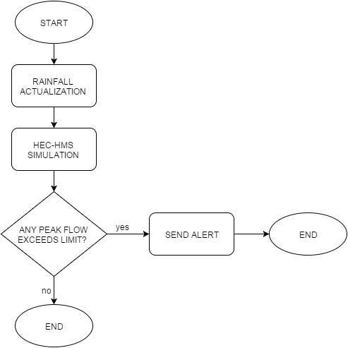

Master's Thesis
Title:
HEC-HMS BASED TOOL FOR REAL TIME FLOOD FORECASTING APPLICATION TO THE HEADWATER BASIN OF THE GUADALENTIN RIVER
Abstract
This study presents a hydrological informatics flood modelling investigation based on an instance from headwater basin of Guadalentín River with the drainage area of 1424.7 km2. The basin model is prepared by the ArcGIS version 10.1, packages Arc Hydro Tools and HEC-GeoHMS. The flood modelling program used is the commercial HEC-HMS version 4.0.
The work embodies two main studies. The first is concerned with the headwater basin of the Guadalentín flood model generation, and the second, the principal one, with the creation of HEC-HMS based tool for a real time flood forecasting by using HEC-DSSVue version 2.0., Anaconda version 3-2.1.0 with Python version 3.4 and shell scripting on GNU/Linux.
The HEC-HMS, rainfall-runoff, model is employing following mathematical methods: SCS Curve Number Loss Method, SCS Unit Hydrograph Method, and Muskingum Channel Flood Routing Method.
Basin model of a studied zone
It is observed that the simulation’s results of Cold Drop of 2012 are unacceptable and deviate from measured values in a real-time. There is a lack of opportunity to conduct the Guadalentín Flood Model’s calibration without accurate rainfall data. The Valdeinfierno zone is characterized by a strong local rainfall that cannot be reproduced using the HEC-HMS with performed meteorological model. This assumption was confirmed also by simulating another storm in 2013.
In addition, this thesis contains didactic examples of a management of HEC-HMS in batch mode; and presents data analysis automation, and flood warning system in form of a tool for a real time flood forecasting using Jython Scripts. This tool based on HEC-HMS is investigated by scripting between HECDSSVue (Java application which uses Jython), Anaconda (Python distribution) using Py4J (one of Python packages enables Python programs to dynamically access arbitrary Java objects), and shell scripting. Generally, the tool aims to conduct specified simulation, in a specified flood model by HEC-HMS after introducing new 24 hours rainfall data in text files and send alerts about flow rates via email. Simultaneously, it allows prediction of a basin response quickly and issue a warning about a certain danger related to the peak flows. This alert can be used to manage operations of a reservoir coupled with flood models, to prepare a zone for emergency response to a flood event.

Flow diagram of HEC-HMS based tool for real time flood forecasting
The results of the final tool can be considered satisfactory.